Imagine saber todos os caminhos possíveis entre dois pontos de um grafo, e saber qual o menor caminho entre eles. Esse é o problema dos menores caminhos, e o algoritmo de Floyd-Warshall é uma solução para esse problema.
“O cubo mágico é um exemplo de um grafo de estados. Com as menores distâncias, podemos passar de uma configuração para outra o mais rápido possível!”
Grafos com Pesos
Neste handout vamos apresentar diversos grafos com pesos, e é importante, antes de começar, entender o que são esses pesos, para que servem e como impactam o problema. Para isso existem alguns cenários muito importantes:
Peso entre dois nodos.
O peso entre dois nodos é calculado a partir da complexidade que se têm de viajar de um nodo para o outro. Abaixo têm um exemplo figurativo da complexidade/dificuldade que estes pesos representam.
Image que você quer conectar dois pontos, A e B. Para isso escolhe o caminho mais rápido e simples, que não têm nenhum obstaculo. Você traça uma linha reta, este caminho terá peso 1.
Caso existam obstaculos no meio do caminho, como pedras, vulcões, cavernas… você terá que desviar deles, e portanto, o caminho terá um peso maior que 1, neste caso escolhemos 5.
Tudo bem que tudo isso é no mundo figurativo, na realidade estes pesos podem representar muito mais do que meros obstaculos, podem ser a distância em KM entre dois pontos, a quantidade de combustivel gasto, o tempo de percurso, entre diversos outros pontos que não serão discutidos ou levados em consideração quando falarmos de pesos.
Pesos infinitos
Como será apresentado mais a frente deste handout, existe uma ideia de caminho com complexidade infinita, que é o caso em que dois nodos não têm uma conexão direta entre sí, havendo necessidade de passar por outro nodo.
Para representar este caso, utilizamos o peso infinito, que é representado por um número muito grande, como 9999999999, ou tão grande quanto o tipo de dado utilizado permitir.
Como você verá, está ideia será melhor apresentada ao decorrer do handout.
Grafos como Matrizes
Este é um exemplo de grafo muito utilizado, existem 3 nodos que estão conectados por caminhos com pesos diferentes. O nosso computador, porém, não têm a capacidade de receber como input este grafo, ele têm que ser guardado em um formato de dados que represente todos os nodos e seus pesos.
Este formato pode ir desde listas, pilhas, filas… porém nenhum destes modelos consegue representar todas as possibilidades de expansão de um grafo, por isso, o modelo mais utilizado é o de Matrizes.
Mas como que uma matriz pode representar um grafo? Para isso existem regras de construção:
A matriz deve ser quadrada, ou seja, o número de linhas deve ser igual ao número de colunas.
A distância/peso de um Node para ele mesmo é igual a 0.
Se não existe uma aresta entre dois Nodes, o peso é igual a zero.
Se existe uma aresta entre dois Nodes, o peso é igual ao peso da aresta.
A 3° regra é uma excessão, que será utilizada para melhor entendimento dos conceitos inicias, posteriormente será tratada novamente com outra definição.
Dica: Construa a Matriz das linhas para as colunas. Então se estiver na Coluna A e Linha B, o peso da aresta é o peso da flecha que liga o Node A ao Node B - e não o inverso.
Checkpoint
Qual a matriz de pesos do Grafo abaixo?
Gabarito
Se conseguiu completar corretamente, quer dizer que já entendeu os objetivos, e pode seguir para o próximo Checkpoint. Se não compreendeu é importante ler as regras novamente e ver se ao construir sua Matriz seguiu todas elas.
Com todos os pesos dos nodos em uma matriz podemos encontrar o caminho de menor peso entre dois nodos.
Checkpoint
Qual o menor caminho entre o Nodo A e B?
Gabarito
O menor caminho entre A e B é ir pelo nodo C que têm peso 5, e depois de C chegar em B, tendo um peso total de 6 - contra o caminho convencional de 7.
Checkpoint
Qual o menor caminho entre o nodo B e C?
Gabarito
O menor caminho entre B e C é ir pelo nodo A que têm peso 5 e depois ir para o nodo C com um peso total de 6 - contra o caminho convencional de 10.
Você deve estar achando o problema muito fácil, basta analisarmos os nodos e seus pesos e encontrarmos o caminho com menor peso. Porém, perceba que estamos apenas buscando pesos entre dois nodos de um Grafo com 3 nodos. Se aumentarmos o tamanho do problema e pedirmos para encontrar todos os menores caminhos em todos os nodos consumirá mais tempo.
Checkpoint
Qual o menor caminho entre todos os nodos, isto é, o menor caminho saindo de cada nó e chegando nos demais ?
OBS: Não gaste mais do que 1 minuto nesse Checkpoint!
Gabarito
Tenho certeza que você nem tentou resolver e já abriu o gabarito. Mas tudo bem, não esperamos que você resolva este Checkpoint, se quiser algo realmente dificil, desça até os desafios.
Você deve ter percebido que é extremamente trabalhoso encontrar o menor caminho para cada um dos casos, e conforme o grafo se torna mais complexo, se torna mais dificil encontrar. Por isso, o algoritmo de Floyd-Warshall foi criado, para encontrar todos os menores caminhos de um grafo de forma eficiente - e entregar a resposta em uma matriz de mesmo tamanho que a inicial.
O que é o Algoritmo Floyd-Warshall
Floyd-Warshall é um algoritmo que utiliza de programação dinâmica para encontrar todos os caminhos entre todos os Nodos de um Grafo/Matriz, dos encontrados seleciona os menores e guarda eles em uma Matriz de mesma dimensão da inicial.
Então vamos construir o pensamento do algoritmo aos poucos, ok ?
Primeiro, vamos analisar o grafo abaixo:
Como você aprendeu anteriormente, a matriz para este gráfo é a seguinte:
Essa matriz representa todos os caminhos possíveis entre os nodos, e como podemos ver, alguns deles não existem. Como discutido, precisamos por um valor para eles, algo que represente essa impossíbilidade. Algo impossível de alcançar remete a algo grande, ou seja, infinito. Portanto, ao se deparar com um caminho inexistente, colocaremos o valor infinito.
Nessse ponto, sem considerar nenhum nó intermediario, é a melhor maneira de sair de um nodo e chegar em outro. Porém, se considerarmos um nó intermediario, e agora que começamos a brincar.
Vamos considerar o nodo D como intermediario, e analisar se ir de C para A não seria mais rápido passando por D.
Agora vamos considerar este problema:
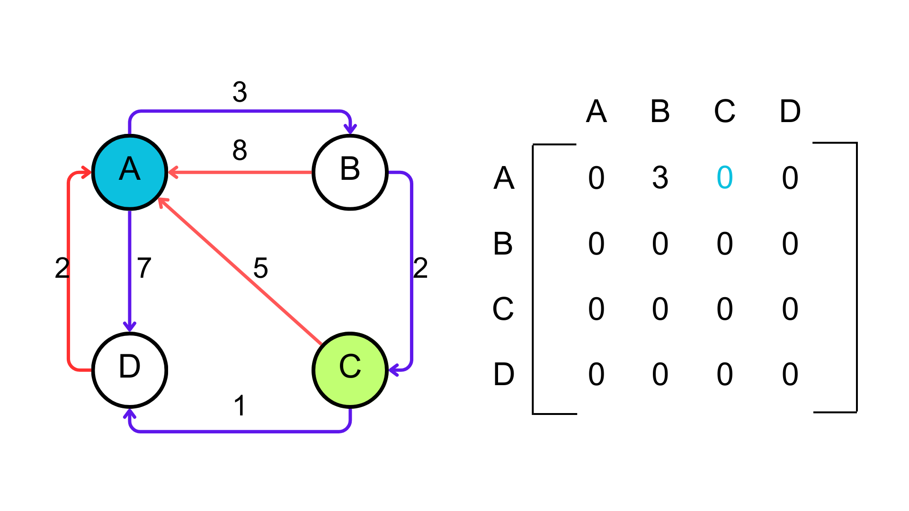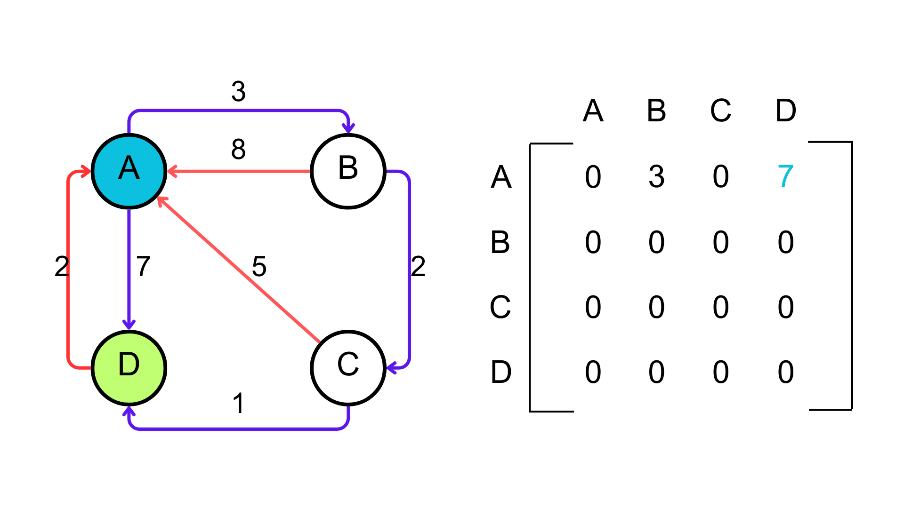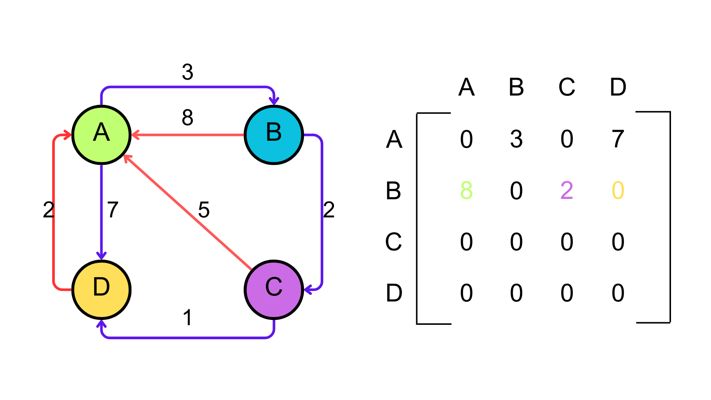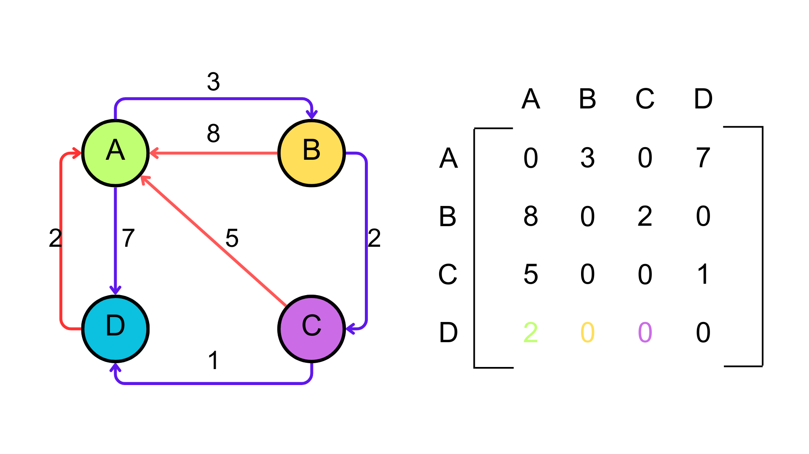
Como você deve ter percebido, o caminho passando por D é mais rápido, e portanto, o caminho de C para A passando por D é o menor caminho.
Mas fazer isso sem uma regra, não vai nos levar a lugar algum, então vamos criar uma regra para isso.
Vamos analisar primeiro o nodo A, como intermediario, depois o nodo B e assim por diante até o último nodo.
Começando pelo nodo A como intermediario, não precisamos checar a linha A e nem a coluna A, pois o nodo A é o nodo de origem do caminho, e portanto, não faz sentido considerar o nodo de origem como intermediario.
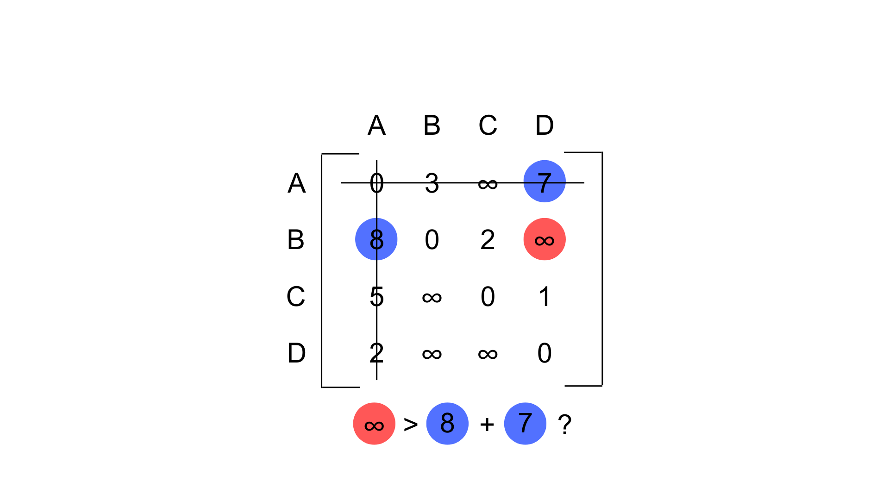
A pergunta que precisamos fazer é:
BC > BA + AC ?
2 > 8 + inf ? FALSOO NÃO MUDAMOS
BD > BA + AD ?
inf > 8 + 7 ? SIM temos um caminho mais curto, então vamos substituir o valor de BD por 15.
CB > CA + AB ?
inf > 5 + 3 ? SIM temos um caminho mais curto, então vamos substituir o valor de CB por 8.
CD > CA + AD ?
1 > 5 + 7 ? FALSO NÃO MUDAMOS
DB > DA + AB ?
inf > 2 + 3 ? SIM temos um caminho mais curto, então vamos substituir o valor de DB por 5.
DC > DA + AC ?
inf > 2 + inf ? FALSO NÃO MUDAMOS
UFAAA, terminamos o nodo A.
Isso quer dizer que a matriz que temos representa o menor caminho entre os nodos, considerando apenas o nodo A como intermediario.
E agora, o que fazemos ?
Agora vamos considerar o nodo B como intermediario, e repetir o processo. E assim por diante, até o último nodo.
Checkpoint
Agora que você viu como funciona, tente terminar para o nodo B.
Gabarito
Colocar imagem da matriz finalizada em B
Como o resultado é falso, não precisamos fazer nada, pois o caminho de A para B é o menor caminho.
O primeiro loop foi feito individualmente, e como é possível ver o algoritmo “trava” em um dos nodos - inicialmente o A - e calcula todos os caminhos dele para os outros nodos, replicando este processo até ter percorrido todos os possíveis caminhos em todos os nodos.
Na verdade, o algoritmo não trava o nó. O conceito de “travar” se da pelo fato de não fazer sentido usar o nó em questão para o calculo da distância, visto que o nó em questão é o nó de origem do caminho.
Desta forma, quando calculamos a matriz de distâncias, o resultado previo, é a menor distancia considerando apenas os nós ja percorridos.
Imagine que você está calculando as distâncias, e “travou” o nó A. Isso significa que o resultado final é o melhor caminho entre A e os outros nodos, porém, este caminho pode ser melhorado se considerarmos o nó B, que é o próximo nó a ser percorrido. E por sua vez, é melhor que a matriz inicial, que não considera nenhum nó.
Logo, considerando o segundo nó, teremos um resultado melhor que o anterior, e assim por diante, até que todos os nodos tenham sido percorridos.
Se você chegou até aqui, deve ter desconfiado de como o algoritmo funciona, e se você pensou que ele utiliza de programação dinâmica, você está certo. O algoritmo de Floyd-Warshall utiliza de programação dinâmica para encontrar todos os menores caminhos de um grafo.
Agora que todos os conceitos sobre Floyd-Warshall foram demonstrados, você já viu a teória, sabe transformar um Grafo em Matriz e têm ideia de como implementar o código. Vamos voltar para tratar das regras e estabelecer elas definitivamente, principalmente a 3° Regra.
Regras:
Regras
Teória
Prática
1°
Matriz deve ser quadrada
Deve navegar todas as possibilidades
2°
Nodo A -> Nodo A = 0
Não modificar input diretamente
3°
Se não existe aresta peso = infinito
4°
Se existir aresta peso = peso da aresta
Você deve ter percebido que agora ao invês de considerarmos igual a zero, estamos utilizando a notação infinito para representar que o custo de percorrer este caminho é extremamente alto - visto que não existe alternativa. A nível de código, algumas linguagens aceitam o uso de infinito, porém outras não, então você pode utilizar um valor muito alto, como 9999999999, ou tão alto quanto o tipo de dado utilizado permitir.
Outra regra adicionada recentemente é quanto a números negativos, que não serão tratados a fundo neste handout, porém é importante você saber que um dos pontos diferenciais do Algoritmo de Floyd-Warshall é que ele consegue tratar arestas com pesos negativos normalmente. Então se você se deparar com alguma situação destar apenas implemente o exercício normalmente que o resultado deve ser o esperado.
Implementação do Algoritmo
Agora que você já sabe como o algoritmo funciona, e quais são as regras que devem ser seguidas, vamos implementar o algoritmo em C. Ao fazer isso, ela deverá ficar algo como:
int **floydWarshall(int grafo[][], int n) {
int **dist = grafo;
for (int k = 0; k < n; k++) {
for (int i = 0; i < n; i++) {
for (int j = 0; j < n; j++) {
if (dist[i][j] > dist[i][k] + dist[k][j]) {
dist[i][j] = dist[i][k] + dist[k][j];
}
}
}
}
return dist;
}
Nesta implementação é importante manter em mente que a função floydWarshall recebe um matriz - representada por “[ ][ ]”, mas que também pode ser representada por “**” - e o tamanho da matriz, que é representado por n. Devolvendo outra matriz de mesmo tamanho de distâncias.
Checkpoint
Apenas olhando para esse pseudocódigo, você conseguiria dizer qual é a complexidade de tempo desse algoritmo? E a complexidade de espaço?
Gabarito
Como o algoritmo utiliza 3 loops de for para percorrer todos os elementos da matriz, a complexidade de tempo é O(n³).
A complexidade de espaço é O(n²), pois o algoritmo utiliza uma matriz de distâncias de tamanho n². Não cresce mais do que o tamanho da matriz de entrada, pois o algoritmo utiliza a mesma matriz para guardar a matriz de distâncias.
Exercícios
Exercício 1 - Descobrindo Todos Caminhos mais Curtos
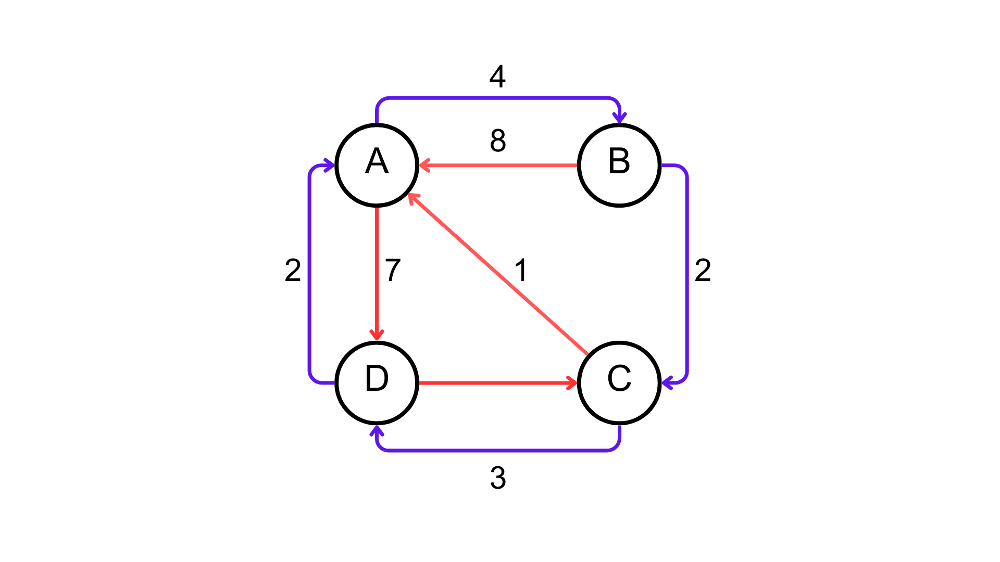
Parte 1: Matriz de Pesos
Construa a matriz de pesos do grafo acima. Utilizando as Regras definitivas.
Parte 2: Implemente o Código em C
Implemente o código em C para encontrar todos os caminhos mais curtos entre todos os nodos do grafo. Utilizando a função floydWarshall.
Parte 3: Construa a Matriz de Distâncias, após a execução do algoritmo
Construa a matriz de distâncias do grafo acima. Utilizando as Regras definitivas.
GabaritoParte 1
Parte 1: Matriz de Pesos
Parte 2
Simplesmente chame a função floydWarshall passando a matriz de pesos corretamente. Lembre que infito pode ser interpretado como um valor muito alto, como 9999999999, ou tão alto quanto o tipo de dado utilizado permitir.
Parte 3
Desafios
Desafio 1 - Google Maps
Imagine que você trabalha na equipe de desenvolvimento do Google Maps. Recentemente, a Google vem recebendo muitas reclamações de desenvolvedores, muitos dos quais pedem um novo client. Portanto, Você recebeu a tarefa de implementar o algoritmo de Floyd-Warshall em uma linguagem interpretada, mais flexível do que a atualmente utilizada, para calcular a distância entre todos os pares de pontos de determinadas regiões. Esse algoritmo, entretanto, precisa de uma modificação em relação ao clássico: Ele precisa receber como argumento uma segunda matriz, que representa o tempo de viagem entre os pontos. A matriz de distâncias deve ser calculada com base na matriz de tempos, e não na matriz de adjacência.
Desenvolva uma função floydWarshall, que recebe como argumentos uma matriz de adjacência grafo e o número de vértices n, e retorna a matriz de distâncias dist, com a modificação pedida.
Dica: Parta do código em C apresentado anteriormente.
Gabarito
def floydWarshall(grafo, n, tempos):
dist = [[float('inf') if i != j else 0 for j in range(n)] for i in range(n)]
for i in range(n):
for j in range(n):
if i == j:
continue
if grafo[i][j]:
dist[i][j] = grafo[i][j]
for k in range(n):
for i in range(n):
for j in range(n):
if dist[i][j] > dist[i][k] + dist[k][j] + tempos[i][j]:
dist[i][j] = dist[i][k] + dist[k][j] + tempos[i][j]
return dist
A matriz tempos representa a matriz de tempos de viagem, onde tempos[i][j] é o tempo de viagem entre o vértice i e o vértice j. A matriz de adjacência grafo representa o grafo, onde grafo[i][j] é o peso da aresta entre o vértice i e o vértice j. A matriz de distâncias dist é a matriz de distâncias entre todos os pares de vértices, onde dist[i][j] é a distância entre o vértice i e o vértice j.
Desafio 2 - Rede social
A imagem abaixo representa um grafo de uma pequena rede desenvolvida entre amigos, para uma disciplina de Engenharia da Computação do Insper. Nele, cada amigo é modelado por um vértice e cada conexão entre amigos é modelada por uma aresta. A distância entre dois amigos é dada pelo número de arestas que separam os dois vértices.
O professor dessa disciplina, que é muito querido pelos alunos, quer saber quão distante são os amigos, para estreitar as relações. Para isso vamos utilizar o algoritmo de Floyd Warshall para calcular a matriz de distâncias entre todos os pares de amigos.
Quais são as dimensões da matriz? Desenhe ela na PRIMEIRA iteração do algoritmo, e no FINAL da última iteração. Use o código que você criou!
Gabarito
A matriz tem dimensionalidade 7x7, pois existem 7 vértices.
Após a primeira iteração, a matriz é a mesma da matriz de adjacência:


 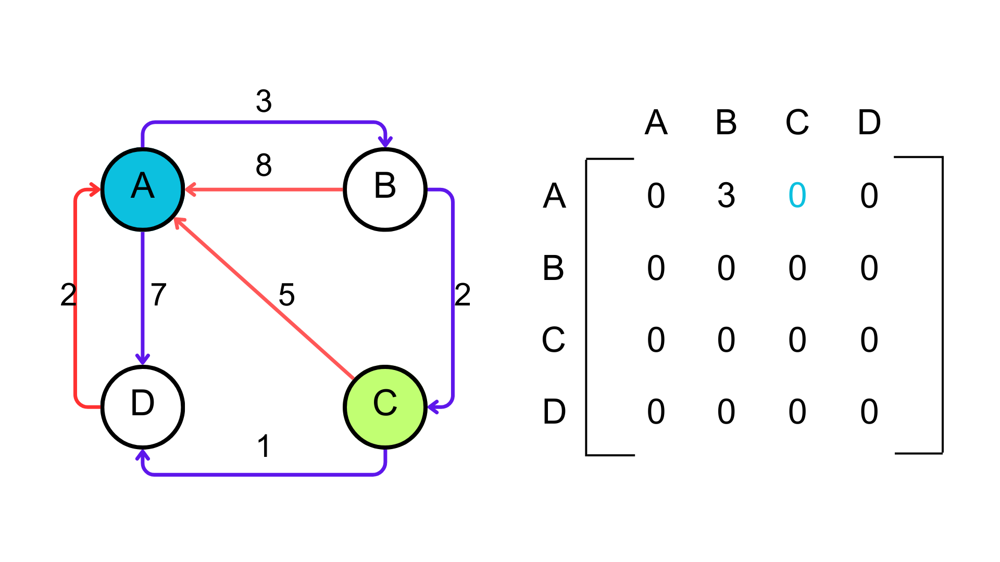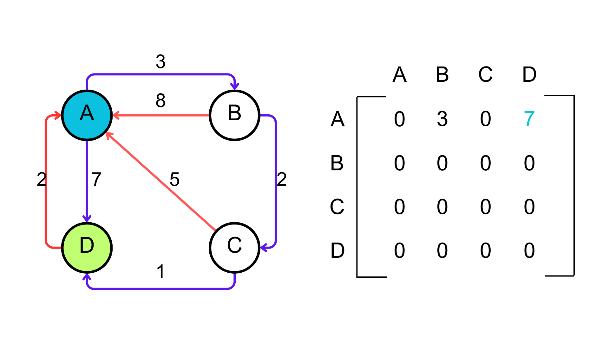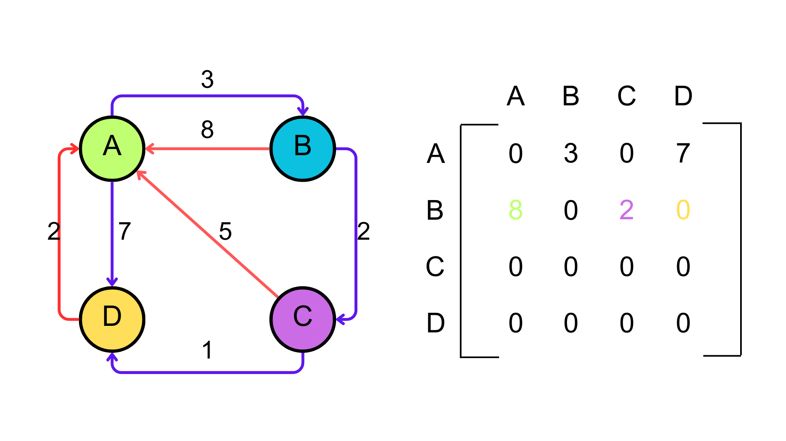
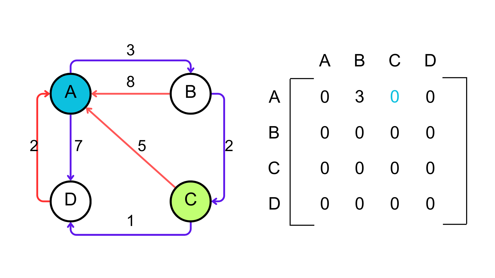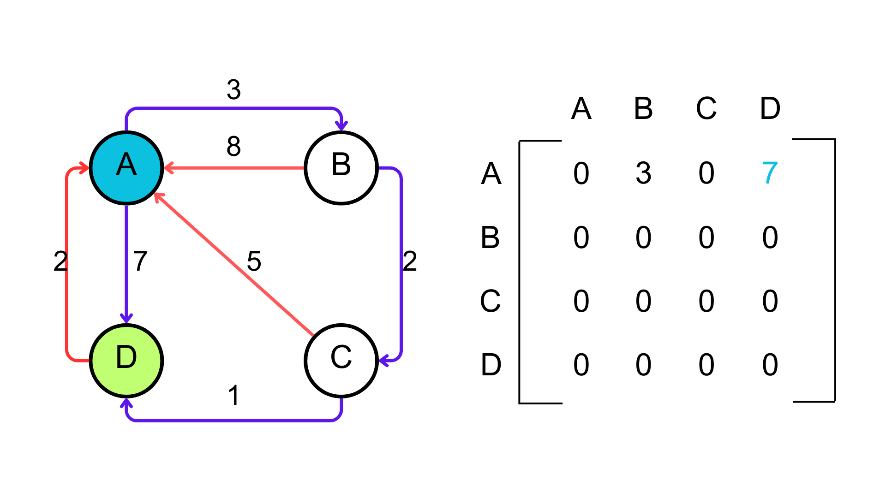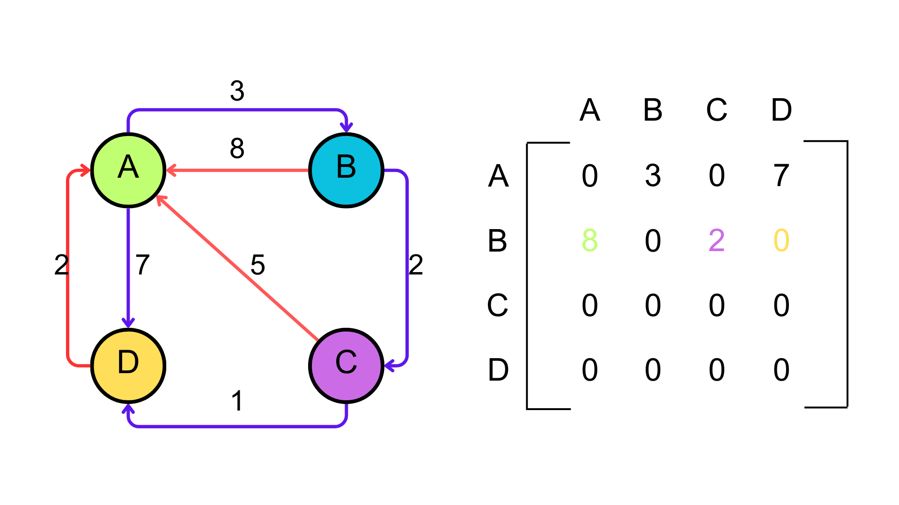 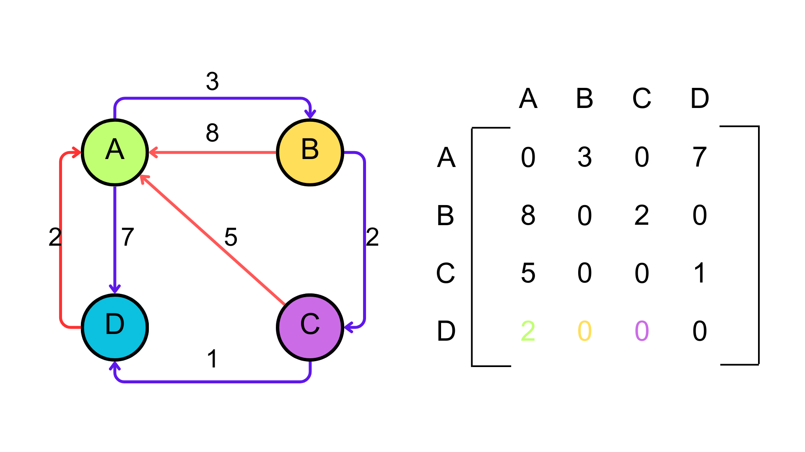
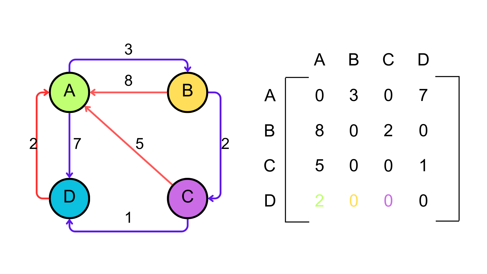

 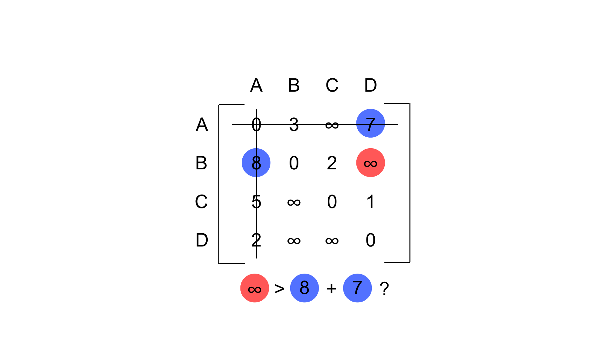
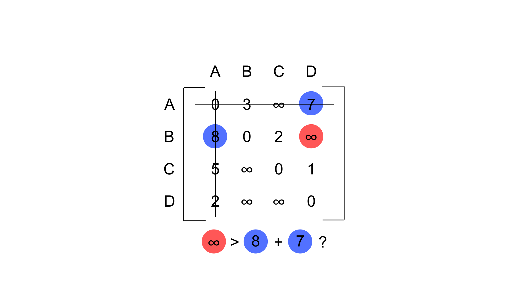